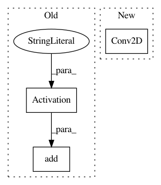

2318052dc79966bf36675606b7d992a347418292,gluoncv/model_zoo/nasnet.py,BranchSeparablesReduction,__init__,#BranchSeparablesReduction#Any#Any#Any#Any#Any#Any#Any#,113
Before Change
self.body = nn.HybridSequential(prefix="")
self.body.add(nn.BatchNorm(momentum=0.1, epsilon=0.001))
self.body.add(nn.Activation("relu"))
self.body.add(SeparableConv2d(in_channels, out_channels, kernel_size,
1, padding, use_bias=use_bias))
self.body.add(nn.BatchNorm(momentum=0.1, epsilon=0.001))
After Change
x = self.body(x)
return x
class BranchSeparables(HybridBlock):
def __init__(self, in_channels, out_channels, kernel_size, stride, padding,
norm_layer, norm_kwargs, use_bias=False):
super(BranchSeparables, self).__init__()
self.body = nn.HybridSequential(prefix="")
In pattern: SUPERPATTERN
Frequency: 3
Non-data size: 3
Instances
Project Name: dmlc/gluon-cv
Commit Name: 2318052dc79966bf36675606b7d992a347418292
Time: 2019-01-07
Author: cheungchih@gmail.com
File Name: gluoncv/model_zoo/nasnet.py
Class Name: BranchSeparablesReduction
Method Name: __init__
Project Name: eriklindernoren/Keras-GAN
Commit Name: 4b71f9b988edf0d5c9e69078c40a1ff62a1853ef
Time: 2018-02-13
Author: eriklindernoren@live.se
File Name: ccgan/ccgan.py
Class Name: CCGAN
Method Name: build_discriminator
Project Name: dmlc/gluon-cv
Commit Name: 2318052dc79966bf36675606b7d992a347418292
Time: 2019-01-07
Author: cheungchih@gmail.com
File Name: gluoncv/model_zoo/nasnet.py
Class Name: BranchSeparables
Method Name: __init__